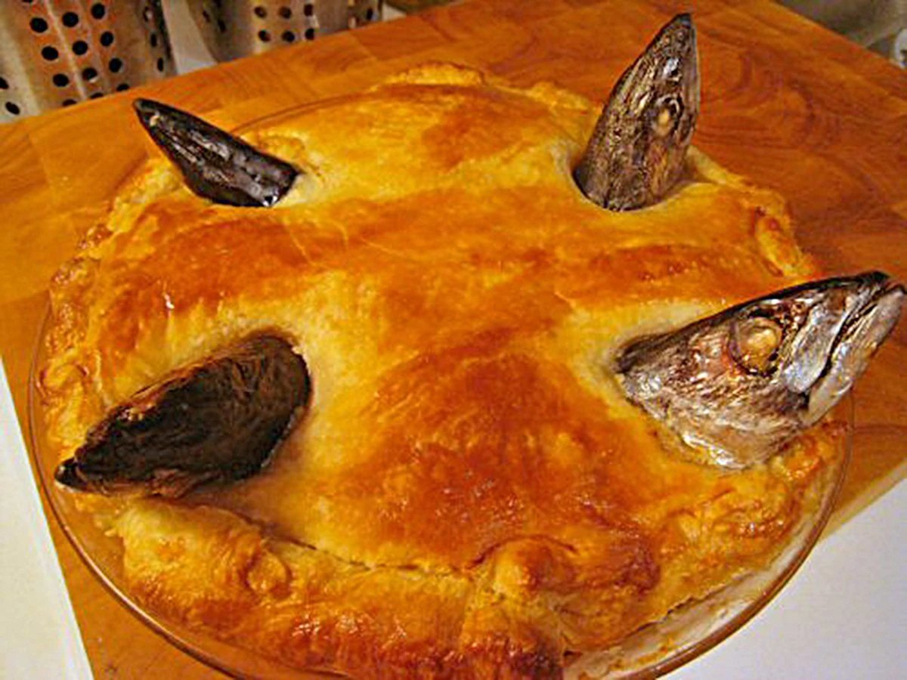

Fish pie

Description
Fish head pie!!! Just like me nan used to make
Serves: 6
Cooking time: 2 hours (Give or take)
Ingredients
- 5 fish heads
- Homepride white sauce
- Puff pastry sheet (premade)
Steps
- Pre heat oven to 180deg fan/200deg gas
- Fill a casserole dish with the jar of Homepride sauce
- Lay sheet of puff pastry on top
- Stick fish heads, mouth side up, into the puff pasty
- Bake in oven for 1 hour 45 minutes
- Take a bite and have a ratatouille flashback moment :)
Home